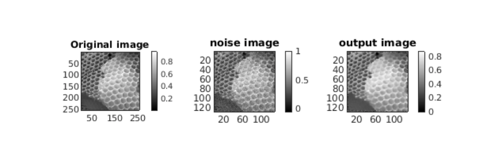

Contents
Image 1: Barbara
Read
input = load('barbara.mat');
input = input.imageOrig;
input = double(input);
Add Noise
G = fspecial('gaussian', [9,9], 0.5);
input = imfilter(input,G,'same');
cropped_img = input(1:2:end,1:2:end);
[m ,n] = size(cropped_img);
sd = 0.05*(max(max(cropped_img))-min(min(cropped_img)));
noise_img = cropped_img + sd*randn(m,n);
Filtering for optimal parameter
patch_size = 9;
window_size = 25;
h = 1.5;
%%
output_img = myPatchBasedFiltering(noise_img,patch_size,window_size,h);
rmsd = sqrt(sum(sum(output_img-noise_img).^2))/(m*n);
optimised standard deviation barbara:- 1.500000
rmsd barbara:- 0.022676
0.9 * SD
tic;
patch_size = 9;
window_size = 25;
h = 1.5;
output_img = myPatchBasedFiltering(noise_img,patch_size,window_size,h*0.9);
rmsd = sqrt(sum(sum(output_img-noise_img).^2))/(m*n);
optimised standard deviation 0.9*h barbara:- 1.350000
rmsd barbara:- 0.020368
1.1 * SD
patch_size = 9;
window_size = 25;
h = 1.5;
output_img_2 = myPatchBasedFiltering(noise_img,patch_size,window_size,h*1.1);
rmsd = sqrt(sum(sum(output_img_2-noise_img).^2))/(m*n);
optimised standard deviation 1.1*h barbara:- 1.650000
rmsd barbara:- 0.024915
Image 2: Noisy Grass
Read
input_grass = imread('grass.png');
input_grass = im2double(input_grass);
Add Noise
G1 = fspecial(('gaussian', [9,9], 0.66);
input_grass = imfilter(input_grass,G1,('same');
cropped_img_grass = input_grass(1:2:end,1:2:end);
[m ,n] = size(cropped_img_grass);
sd = 0.05*(max(max(cropped_img_grass))-min(min(cropped_img_grass)));
noise_img = cropped_img_grass + sd*randn(m,n);
Filtering for optimal parameter
patch_size = 9;
window_size = 25;
h = 0.01;
output_img = myPatchBasedFiltering(noise_img,patch_size,window_size,h);
rmsd = sqrt(sum(sum(output_img-noise_img).^2))/(m*n);
optimised standard deviation grass:- 0.010000
rmsd :- 0.000344
0.9 * SD
patch_size = 9;
window_size = 25;
h = 0.01;
output_img = myPatchBasedFiltering(noise_img,patch_size,window_size,h*0.9);
rmsd = sqrt(sum(sum(output_img-noise_img).^2))/(m*n);
optimised standard deviation 0.9*h grass:- 0.009000
rmsd :- 0.000268
1.1 * SD
tic;
patch_size = 9;
window_size = 25;
h = 0.01;
output_img_2 = myPatchBasedFiltering(noise_img,patch_size,window_size,h*1.1);
rmsd = sqrt(sum(sum(output_img_2-noise_img).^2))/(m*n);
optimised standard deviation 1.1*h grass:- 0.011000
rmsd :- 0.000425
Image 3: HoneyComb Real
Read
input_honey = imread('honeyCombReal.png');
input_honey = im2double(input_honey);
Add Noise
G2 = fspecial('gaussian', [9,9], 1);
input_honey = imfilter(input_honey,G2,'same');
cropped_img_honey = input_honey(1:2:end,1:2:end);
[m ,n] = size(cropped_img_honey);
sd = 0.05*(max(max(cropped_img_honey))-min(min(cropped_img_honey)));
noise_img = cropped_img_honey + sd*randn(m,n);
Filtering for optimal parameter
patch_size = 9;
window_size = 25;
h = 0.015;
output_img = myPatchBasedFiltering(noise_img,patch_size,window_size,h);
rmsd = sqrt(sum(sum(output_img-noise_img).^2))/(m*n);
optimised standard deviation honey:- 0.015000
rmsd :- 0.000349

0.9 * SD
patch_size = 9;
window_size = 25;
h = 0.015;
output_img_1 = myPatchBasedFiltering(noise_img,patch_size,window_size,h*0.9);
rmsd = sqrt(sum(sum(output_img_1-noise_img).^2))/(m*n);
optimised standard deviation 0.9*h grass:- 0.009000
rmsd :- 0.000268
1.1 * SD
tic;
patch_size = 9;
window_size = 25;
h = 0.015;
output_img_2 = myPatchBasedFiltering(noise_img,patch_size,window_size,h*1.1);
rmsd = sqrt(sum(sum(output_img_2-noise_img).^2))/(m*n);
optimised standard deviation 1.1*h honey :- 0.016500
rmsd :- 0.000370
MASK